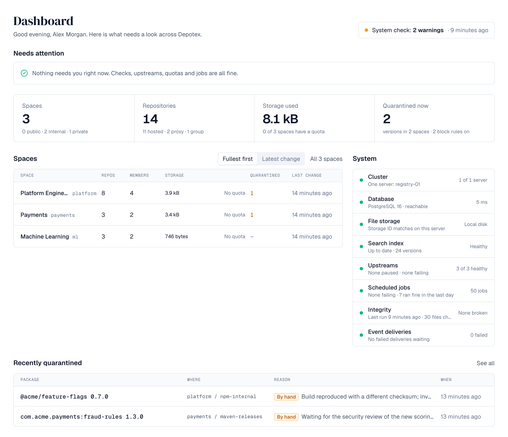
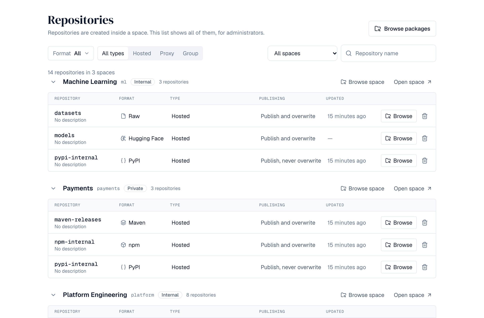
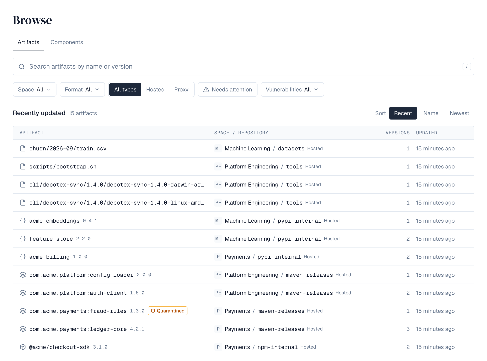

Every package your teams build and use, on a server you run.
Depotex is a self-hosted artifact repository for 18 package formats. It caches the public registries your builds depend on and gives security teams SBOMs, quarantine and policies around every version. Run it on one server or a cluster, with the same features either way.

Works with the tools developers already use.
Point your package manager at Depotex and keep your existing commands. Each space has one address per format: /repository/<space>/<format>/
Host, cache and group behind one URL.
Hosted repositories hold what you publish. Proxy repositories fetch from Maven Central, npm, PyPI, Docker Hub or another Depotex and keep a copy, so builds keep working when the internet doesn't. Group repositories put both behind a single address.


Find any version and see what's inside it.
The artifact browser searches every repository you can see. Open a version for its install command, files, dependencies and security status. Depotex reads the SPDX and CycloneDX SBOMs stored with artifacts, finds a component everywhere it's used and checks it against known vulnerabilities from OSV.
Keep bad versions out, even through proxies.
Quarantine holds new or suspect versions until someone releases them. The block list refuses a version everywhere, including through proxies. Integrity checks confirm every stored file is present and unchanged, and hostile metadata is quarantined on arrival.


Enforce rules and react to events.
Every major operation is an event. Policies can block, warn about or adjust it before it happens, with a dry run first. Automation sends alerts, webhooks and emails after. Signed plugins add checks, screens and tools for AI agents.
Spaces hold repositories. Repositories hold versions.
Permissions come from a person's system role and their role in each space. Tokens and applications never do more than the person behind them.
Runs where you do, and looks after itself.
Backups with encryption and test restores, a system check with per-server cluster health, scheduled jobs, an audit log and Prometheus metrics. Recovery mode explains what's wrong when an installed server can't start.
- Deploy
- Container images, Helm chart
- Topology
- One server or a cluster
- Database
- PostgreSQL
- Cache
- Redis, optional on one server, required for a cluster
- Files
- Local disk, S3, MinIO or Azure Blob
- Directories
- Local, LDAP, Active Directory, Entra ID, Google Workspace, SCIM
- Sign-in
- OpenID Connect, SAML, device sign-in, workload identity
- Setup
- Setup wizard or an unattended setup file
Start with Standard. Add what you need.
Each feature's page says which tier it needs.
Everything in the docs, by topic.
Install, enter the setup key, and follow the wizard.
Then create a space and its first repository, and point your package manager at it.